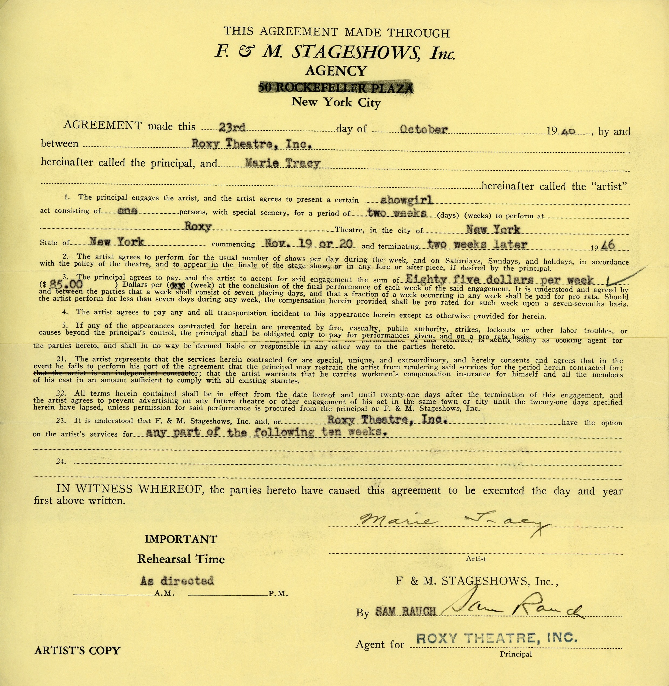
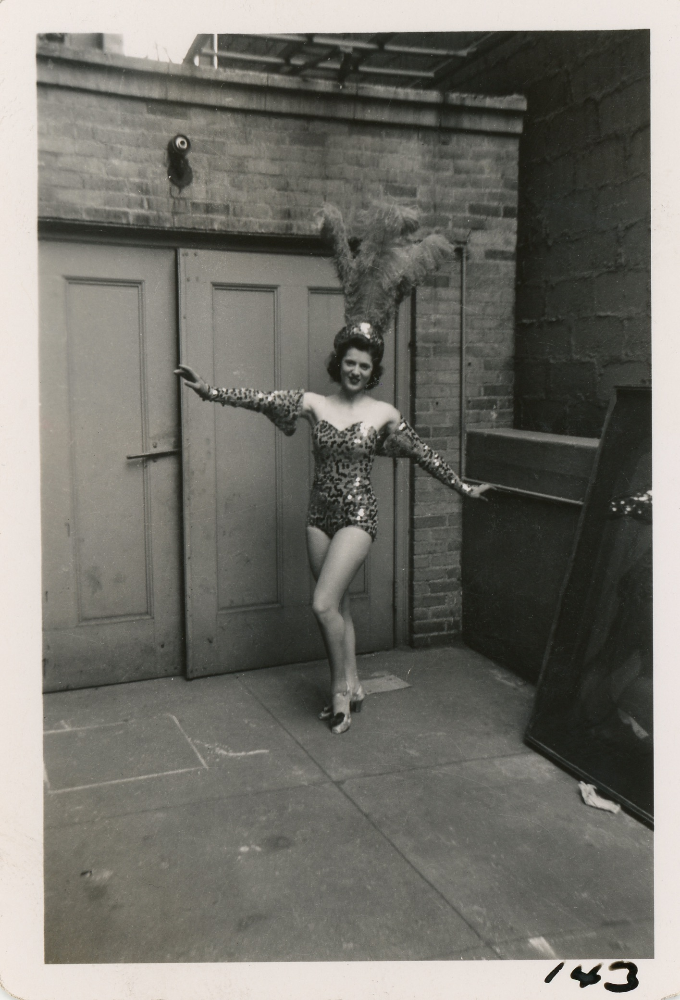
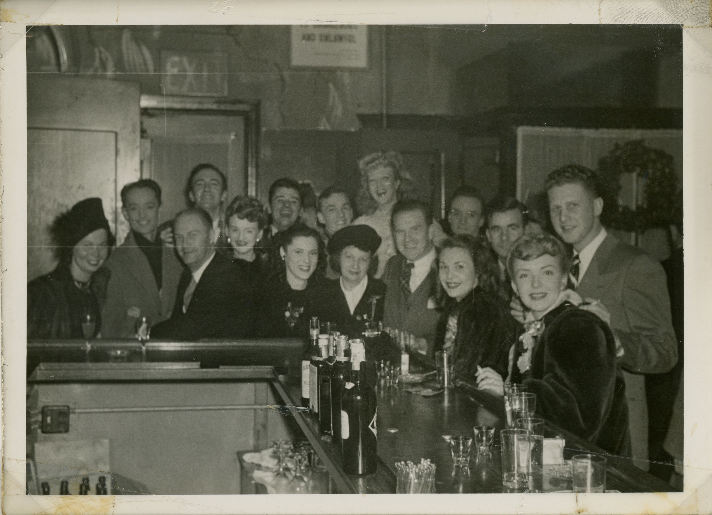
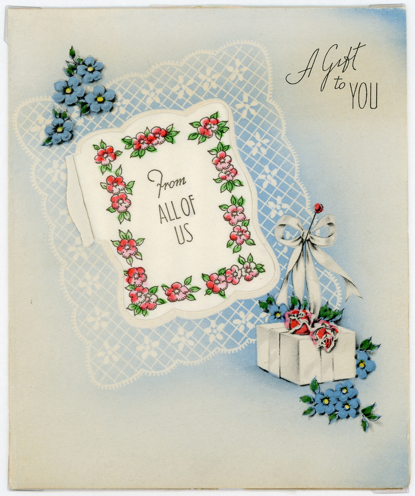

-
Jan 8, 1922
Born Elmhurst, Queens
-
1930-1938
The Miller Sisters
At 8 years old, Marie's doctor suggests that she take up dance lessons to build strength. It's not until high school that Marie begins to consider it as a career.

-
1937
The Tracy Sisters
Marie and her sisters ran a local dance program from their backyard. Students paid 25¢ a class, and the three sisters used the profits to fund dance classes for Marie, violin lessons for Ann, and piano lessons for Patricia.

-
Mar 1939
The Ames Sisters
Took over as the fifth Ames Sister after one of the real sisters became pregnant. At 17, toured from New England to Chicago in this singing, dancing, and acrobatic act.

-
June 1940
Graduates High School
Graduates from Newtown High School in Elmhurst, Queens, while continuing to perform with the Ames Sisters.
-
1940-1941
The Marvelettes
As several of the Ames sisters leave to get married, the group brings in new girls and expands, now calling themselves the Marvelettes.

-
1942
"No" to South America
After years of performing together, Marie declines the offer to join the Marvelettes on tour in South America.
-
1942
"One or the other"
Marie auditions at both the Roxy and Radio City Music Hall, the first glimpse at the opportunity to fulfill her dream of being "one or the other"– a Rockette or Roxyette.
-

Feb 1942
Show up at the Roxy
A month after her audition, a spot opens up at the Roxy. Marie lands the gig and fulfills her childhood dream.
-
1942-1946
Roxyette
As a full-time dancer, Marie performed twice-a-day, seven days a week.

-

Sept 1945
Fit Model
In addition to rehersals and performances, Marie also acts the official fit model for the Roxy costumes. She joins the IATSE Labor Union as part of her expanded role.
-

Oct 1946
Early Retirement
Marie falls ill with mastoiditis– a serious complication from an ear infection. The infection forces her into retirement.
Although it may have felt like an early retirement, few lasted as long as Marie did at the Roxy, due to the rigorous standards for the dancers as well as societal pressure on the girls.
-

Sept 1947
Wedding Bells
With Joe's graduation from St. John's Law School, the happy couple were free to marry. Marie Tracy becomes Marie Irwin on September 13, 1947.